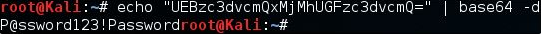

# This is a sample from sysprep.inf with clear-text credentials.
[GuiUnattended]
OEMSkipRegional=1
OemSkipWelcome=1
AdminPassword=s3cr3tp4ssw0rd
TimeZone=20
# This is a sample from sysprep.xml with Base64 "encoded" credentials. Please people Base64 is not
encryption, I take more precautions to protect my coffee. The password here is "SuperSecurePassword".
<LocalAccounts>
<LocalAccount wcm:action="add">
<Password>
<Value>U3VwZXJTZWN1cmVQYXNzd29yZA==</Value>
<PlainText>false</PlainText>
</Password>
<Description>Local Administrator</Description>
<DisplayName>Administrator</DisplayName>
<Group>Administrators</Group>
<Name>Administrator</Name>
</LocalAccount>
</LocalAccounts>
# Sample from Unattended.xml with the same "secure" Base64 encoding.
<AutoLogon>
<Password>
<Value>U3VwZXJTZWN1cmVQYXNzd29yZA==</Value>
<PlainText>false</PlainText>
</Password>
<Enabled>true</Enabled>
<Username>Administrator</Username>
</AutoLogon>
